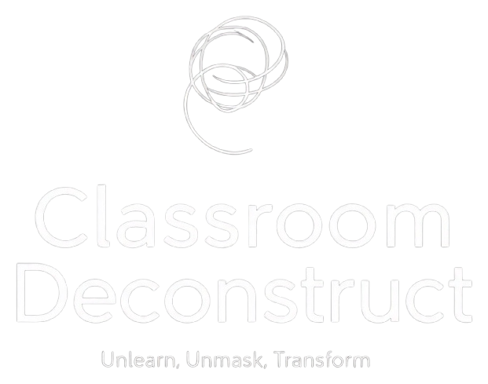

Not from the outside in — from the inside out
A disruption in the traditional learning landscape. Neither a training, a leadership course, nor a wellness retreat. A unique space for those ready to peel back the layers, question their beliefs, and discover who they are underneath everything they've been taught to be.
A deliberate slowdown — not to promote passivity, but to foster a deeper connection with our authentic selves. It disrupts ingrained patterns and reminds us of the importance of being real.
Let go of what was never truly yours. The inherited beliefs, the performed roles, the survival patterns that once protected you but now constrain you. This is not about acquiring new knowledge — it's about releasing what doesn't serve.
Remove the false roles and reveal the raw self. The mask didn't protect you — it protected your image. Beneath it, you are still here. This is the courage to be seen without the costume.
Not by becoming someone else, but by returning to who you've always been. This journey isn't about adopting new personas; it's about stripping away false layers to reveal the authentic individual within.
These aren't steps to be followed, but invitations to embrace different kinds of honesty. You don't move through them once — you cycle through them your entire life.
A 10-week immersive training for individuals ready to lead with presence, truth, and depth. Not about teaching — about holding space, embodying truth, and facilitating transformation from the inside out.
"You are not here to teach. You are not the authority. You are here to hold the container — with presence, with steadiness, and with care."
Each session follows a simple but profound rhythm. Not to fix, but to hold. Not to perform, but to be present.
Certification is not about performance. It's about embodiment. Demonstrating that you can hold space with presence, integrity, and care.
We don't promise transformation. We promise a safe and supportive space for you to confront your truth. And when that happens, transformation becomes inevitable.